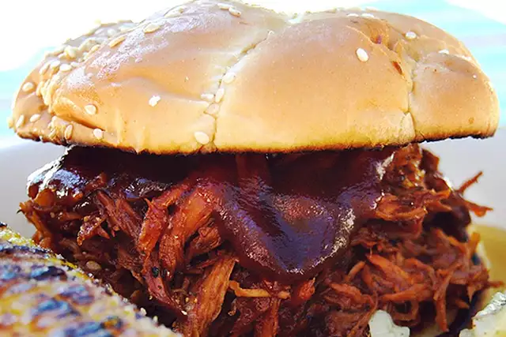

Pulled-Pork

Pulled Pork Recipes
Whether you're making it in the slow cooker, oven, or smoker, we've got dozens of top-rated
recipes for pulled pork.
ingredients
- Brown sugar
- Onion powder
- Garlic powder
- Cumin
- Smoked paprika
- Good amount of salt & pepper
- Pinch of cayenne
Steps needed for making the dish
- Cleaning Up the Pork Butt
- Rub-a-dub-dub and Chilling Overnight
- How to Cook Pulled Pork
- The Waiting cooking
- Resting Your Pork
- Pulling It
- Storing + Reheating
- People Made This Project